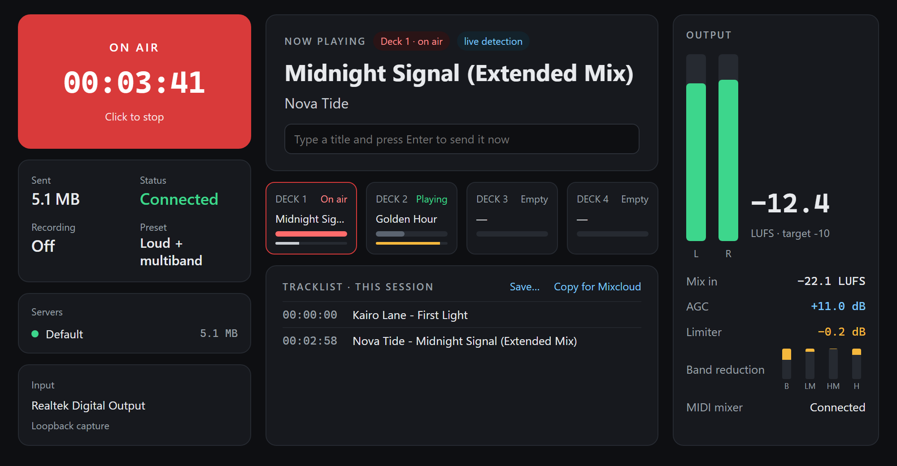
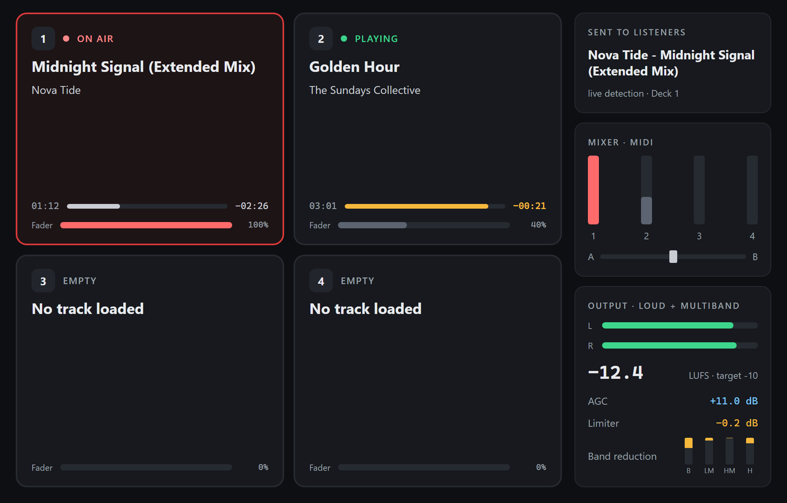
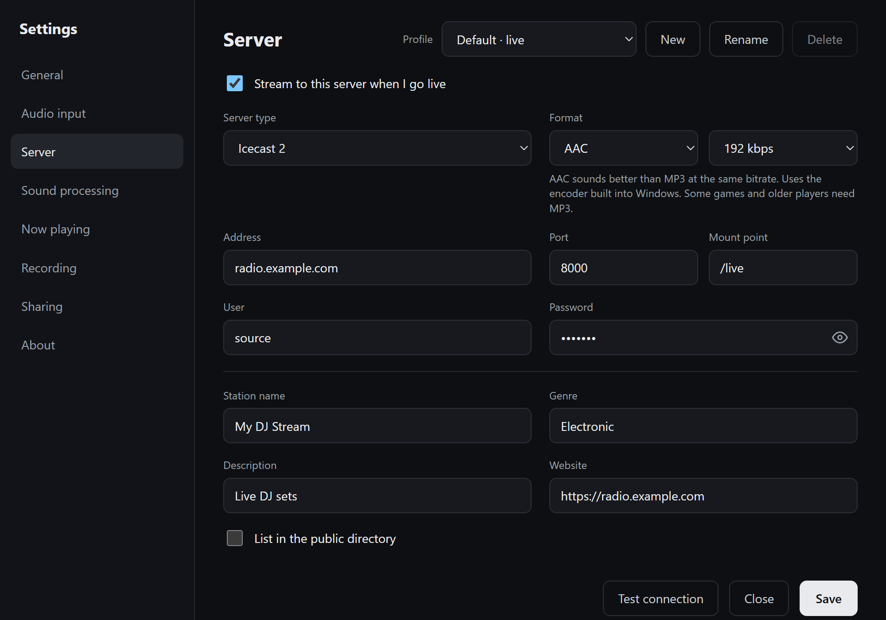
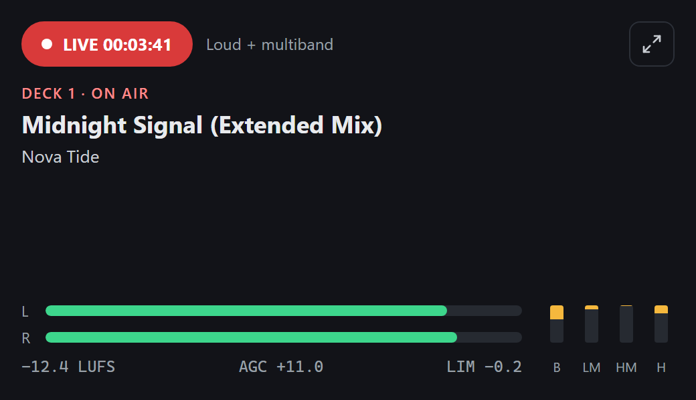

Stream your DJ set.
The track titles take care of themselves.
djcast sends what you play to Icecast and Shoutcast and reads the track that is actually on air from rekordbox or Serato DJ — the deck it's on and where your faders are. Free and open source, for Windows and Mac.
Windows 10 and 11 · macOS 13 or newer · MIT / Apache-2.0

Everything a DJ stream needs, in one window
No virtual audio cables, no typing titles by hand, no separate encoder app.
Now playing from rekordbox and Serato
Reads the decks in real time and follows your channel faders and crossfader over MIDI, so listeners see the track that is really on air. No database key. With Serato DJ 5 or newer, the controller's faders tell which deck is heard.
Radio-ready sound
Loudness levelling to EBU R128, optional four-band compression and a look-ahead limiter: your mix sounds as full as other stations, without clipping.
Several servers at once
Icecast 2 and Shoutcast v1/v2, each in MP3, AAC or Opus. Every server reconnects on its own; a slow one never holds the others back.
Record the set
A recording of exactly what listeners heard, with a CUE sheet so players show every track, and a timestamped tracklist ready for Mixcloud.
Discord and OBS
Posts to your Discord channel when you go live, on every track and when you stop. Writes now-playing text files for OBS overlays.
Made to stay out of the way
A compact mini window, a tray icon, start with your computer, automatic updates — on Windows and macOS, in 13 languages.

It knows which deck is on air
Two tracks playing during a blend? djcast waits until one deck is clearly louder through the mixer, then switches the title — not too early, not too late.
- Elapsed and remaining time for every deck (rekordbox)
- Channel faders, crossfader and assign switches over MIDI (Pioneer DDJ built in; other controllers are learned)
- Type a title yourself at any moment when you want to

Set up once, go live with one click
Keep a profile for every station you play on and tick the ones to stream to.
- Test the login before you go live
- Passwords kept in Windows Credential Manager or the macOS Keychain, not in a text file
- Captures what your DJ software plays (rekordbox, Serato DJ…), or your controller's master (picked automatically for the DDJ-1000) — no extra drivers

Tested setups — and help wanted
djcast is tested on one DJ setup so far. If yours is different, a short report tells everyone whether it works and shows what to fix.
Tested
- Pioneer DDJ-1000 with rekordbox 7.2 on Windows 11: loopback (ASIO with PC MASTER OUT, or WASAPI) and capture of rekordbox only
- Pioneer DDJ-1000 with rekordbox 7.2 on macOS (Apple Silicon): the controller's master over USB, picked automatically
- Channel faders, crossfader and assign switches over MIDI on both systems
- Serato DJ Pro 5.1 on Windows 11: the tracks on the decks, the deck on air from the controller's faders over MIDI
- Icecast 2.4
Not tested yet — can you help?
Other Pioneer DDJ and DJM models, other controllers (the faders can be learned), Serato DJ with its own controllers and on Mac, Intel Macs, Shoutcast servers, VirtualDJ through its tracklist file. Settings → About → Setup report collects what's useful in one click.
Get started
You need a streaming server — your own Icecast or Shoutcast, or one from a hosting provider.
Install
Windows: run the installer. Windows may warn that the file isn't commonly downloaded while djcast is new — choose More info → Run anyway. Mac: open the .dmg, drag djcast to Applications, and allow it under Accessibility when it asks, so it can read the decks.
Add your server
Settings → Server: address, port, mount point and password, and the format you want. Test connection tells you right away if the login works.
Go live
Play in rekordbox or Serato DJ and press Go live. Titles follow your mix; the tracklist and recording build themselves.
Privacy
The app has no accounts, analytics or telemetry. It only connects to the streaming servers you add, to GitHub to check for updates (you can turn it off), and to Discord if you set up a webhook. Your music library never leaves your computer. Details
This website counts visits and download clicks with GoatCounter: no cookies and no personal data.
Code signing
The Mac app is signed with an Apple Developer ID and notarized by Apple. The Windows installers are not code-signed yet, which is why Windows may warn on first run. They are built only by GitHub Actions from the public source, and the app checks the signature of every update it installs. Code signing policy
Open source
Written in Rust, dual-licensed MIT / Apache-2.0. Bug reports, ideas and translations are welcome on GitHub.